A Round House Of Straw Bales
January/February 1973
By BOB DOOLITTLE
Everything the Power of the World does is done- in a circle.... Our teepees were round like the- nests of birds, and these were always set in a circle... But the Wasichus [Whites] have put us in these square boxes. Our power is gone and we are dying....
Black Elk Speaks , p. 199-200
And they shall not build and another inhabit; they shall not plant and another eat: for as the days of a tree are the days of my people, and mine elect shall long enjoy the work of their hands.
Isaiah , 65:22
We figure it took two 40-man-hour weeks to build a nd cost us a total of $25 . . . and the pleasure of living in a round house that we put together with our own hands has verified Black Elk and Isaiah's thoughts beyond words. Still, in words, we can lay out the recipe we followed . . . just in case you want to construct such a residence for yourself.
Our first step was to pick a spot, put in a stake and-with a 10-foot-long string attached to the post-draw a circle on the ground. (That's a 63-foot circumference . . . we wanted some room. Even this beginning step was simpler and quicker than measuring and squaring the normal rectangle.
Next we cut eight poles about four inches in diameter eight feet long and planted them upright (in holes 20 inches deep) at equal intervals around the circle. By tamping solidly as we filled dirt and stones back in around the poles, we managed to make the uprights fairly stable. At that stage, the house made us think of Stonehenge.
It also made us think of the roof we'd soon be resting on the uprights . . . a roof that would push down and out . How would we contain that outward pressure? Rafters? Buttresses?
The answer was so simple and so round . . . we bound the whole ring of poles near their tops with wire. Baling wire or even heavy twine would have done the job, but we had barbed wire from the dump for free and we strung it up . . . five times around in a tight circle.
Then we notched the tops of the uprights, collected eight more longer and thinner (12 feet by three inches in diameter) poles and notched the out-end of each to fit the uprights as shown.
A pyramid of bales (later used as building blocks) held the roof supports-and us-while we set, nailed and wired the poles in place.
The center-ends of the roof timbers were then nailed and wirebound together in a superimposed two-sets-of-four pattern that had a hole in its center for a stovepipe to stick through.
By that time we were really high. We hadn't known for sure. we could build anything when we started . . . and here our pole frame was, already starting to took like a house. We were meeting and enjoying the special problems of round form, too: instead of walls and square corners and parallel lines, it was a new world of curves and cones and diameters and centers.
The next step-putting up the wall-was even more exciting!
We had bought and hauled in two pickup loads of straw . . . 90 bales for $21.00. Each bale, turned on edge, was 1-1/2 feet high . . . which meant that a stack of four would give us a wall six feet tall.
It was easy to make the oversized "bricks" of straw fit the circumference of our circle: we just leaned each bale against another and bent it by jumping on it to make it sag.
As each tier of our four-layered wall was completed, we bound the circle of bales tightly into each other and into the frame with a band of twine.
To stagger the bundles of straw like brickwork meant using a half bale at one end of each layer. We made these pint-sized building blocks by driving a stake (with new twine tied to it)
through the middle of a still-uncut full-sized bale. Out came the stake on the other side-like a threaded needle-making it easy for us to tie up the first of the two "shorties" we got from every bale we split.
We left an opening the width of the door in each of the layers and-in the third tier-we left gaps the width of the windows we'd found (for free, again in the dump). We made supports for the top layer of bales by laying boards over the window openings.
Then we laid a covering of hog wire over the roof supports and attached its ends to the barbed wire with which we had circled the tops of the wall poles. Over the hog wire, we spread an inch of loose straw (EDITOR'S NOTE: Hey, Bob, why not a thicker layer of roofing straw for more insulation?) . . . and over the straw we nailed a corrugated tin roof that overhung the building's wall. As a final touch, we spotted the nail holes in the corrugated metal with tar.
Even with all the climbing and hammering and heavy material, the roof poles held up well. The metal sheets, however, were hard to work with, hard to cut and hard to clamber around on as we guessed where to nail in order to hit a pole. Next time I'll use three-foot-wide strips of plastic, overlapped like long shingles to make the water run off. The plastic is lighter and (if you have to buy the tin) cheaper.
Just for fun as we began to top our new home, it began to snow. By that time, my hands were also beginning to show my inexperience (each day added a new scratch or cut, mainly from the barbed wire and tin). The excitement of construction, however, had made us stronger than any mere cold weather or small wounds. Our city selves no longer shrank from such challenges. We felt quite able to meet-and beat-the worst we encountered.
Once the roof was on, it was time to set the windows into the pre-fitted openings we had left for them. We supported each frame on little one-inch-thick poles set into the ground inside the house at the appropriate locations. Then we attached wires to a screw in each corner of every window frame, pulled the strands out between the bales around the openings, drew the frames snug against the wall and cinched the wires to sticks on the outside.
For the door frame, we set two more poles about two feet into the dirt, just like the original eight uprights (working right on the ground is so simple and straightforward). We nailed a short 2 X 4 across the top of the two vertical members to complete the frame and a strip of cardboard (like a long hinge) over the real hinges to weatherproof one side of the door. After a little shaving, the door neatly closed into the other framing pole and a nail-beheaded, bent info a "U" and hammered into the upright-was all the latch-catch we needed.
At that point, the only drafts we felt came from odd chinks in the wall and from between the wall and the roof. These cracks we stuffed with straw . . . until the air inside the house was perfectly still. The floor, still strewn with straw from our work, was so pleasant to walk on that we decided to leave it that way.
Then-great moment!-we brought in the stove and placed it in the center of the lodge on a little raised platform of dirt inside a circle of rocks (to keep the fire away from the straw).
To protect the roof poles from the heat of the stovepipe, we wrapped each timber at its center-end in a little jacket of asbestos and put a layer of aluminum foil around the pipe where it went through the ceiling. Then we stapled a big piece of asbestos (with a hole in its middle for the pipe to pass through) to the underside of the roof to cut heat loss.
And that was it. Except for the fact that we're so into straw that we've kept several bales as furniture.
When you walk into our house the floors, wall, roof and all are the golden color of a wheat field. The round floor plan so of embraces you and the eye moves unhindered around is one continuous wall. The total effect-if you'll pardon my bias-is most relaxing.
If you build a lodge like ours, do write and tell me about it.
(EDITOR'S NOTE: Bob Doolittle's current address is W1653 Water Avenue, Spokane, Washington 99201. He'll probably get a lot of letters as a result of this article, so remember to send along a stamped, self-addressed envelope if you expect a reply).
|
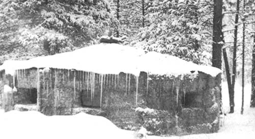 |
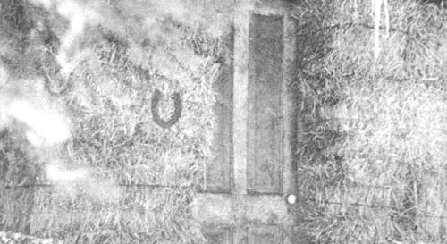 |
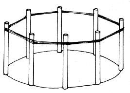 |
 |
 |
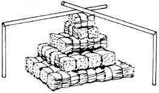 |
|
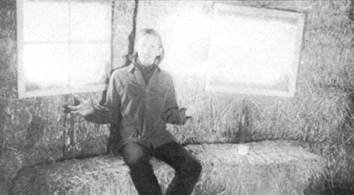 |
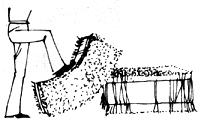 |
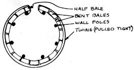 |
|
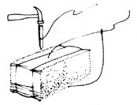 |
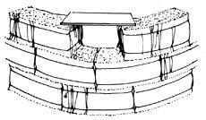 |
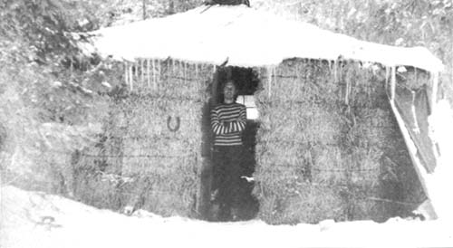 |
|
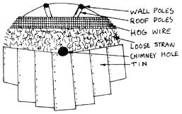 |
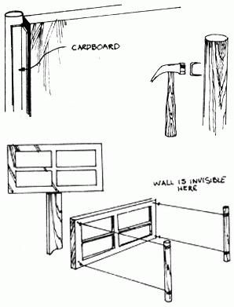 |
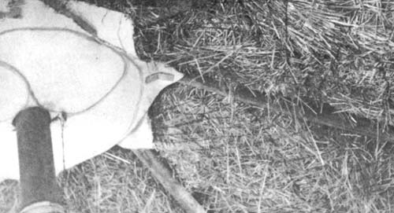 |
|
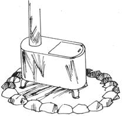 |
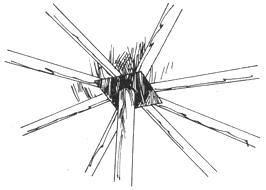 |
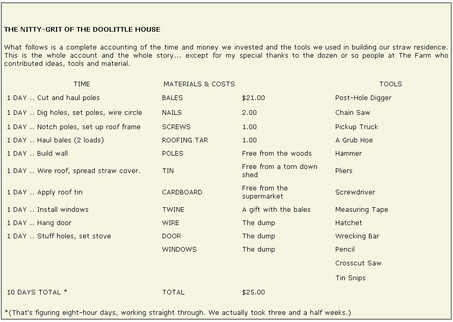 |